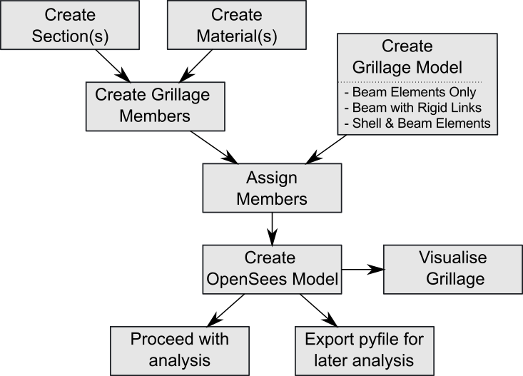
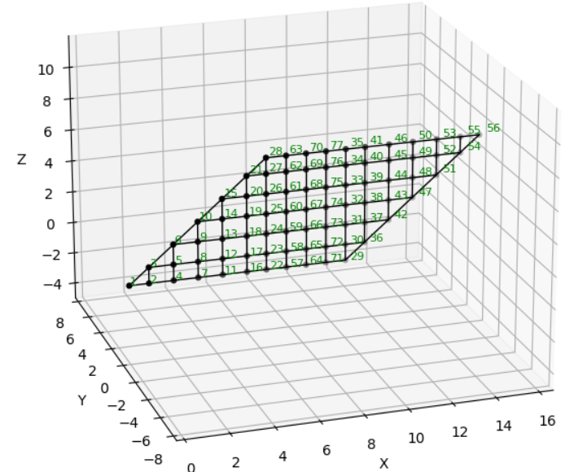
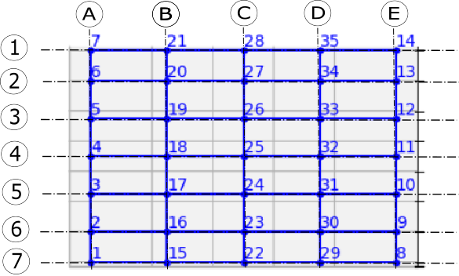
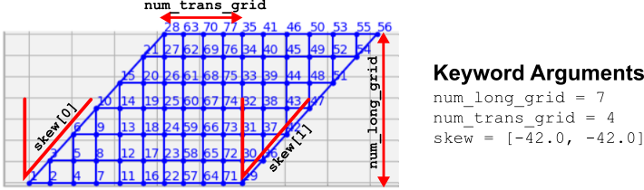

Creating grillage models#
The ospgrillage module contains interface functions which can be called following the module syntax. These interface functions generally have set_, create_ or get_ in their syntax. For example, create_material() creates a material object for the grillage model.
A list of all interface functions can be found in API reference. Although users can opt to interact with module objects directly, we recommend the more pythonic interface functions.
Workflow overview#
Figure 1 summarizes the workflow of creating a grillage model using ospgrillage.

In general, there are three steps to create a grillage model with ospgrillage:
Creating the grillage members.
Creating the grillage model object.
Assigning the defined grillage members to the elements of grillage model object.
We will detail these steps by creating a grillage model of a bridge deck as shown in Figure 2.

To begin, import ospgrillage as either ospg or og as shown in the following code block. As will be needed later, we also prepared the unit convention of variables for this example as shown in the same code block.
import ospgrillage as og
# create unit signs for variables of example
kilo = 1e3
milli = 1e-3
N = 1
m = 1
mm = milli * m
m2 = m ** 2
m3 = m ** 3
m4 = m ** 4
kN = kilo * N
MPa = N / ((mm) ** 2)
GPa = kilo * MPa
Defining elements of grillage model#
A grillage element is created using the create_member() interface function. This function returns a GrillageMember object, which requires two other objects as inputs, namely:
The following example code instantiates an I_beam grillage element to represent some intermediate concrete I-beam, with material and section definitions explained later on.
I_beam = og.create_member(member_name="Intermediate I-beams", section=I_beam_section, material=concrete)
The member_name string input is optional.
When setting up grillage members, it is good practice to first create the
Section and Material
objects before creating each GrillageMember.
For the example bridge of Figure 2, lets define all its elements i.e. slab, edge_beam, and edge_slab.
slab = og.create_member(member_name="concrete slab", section=slab_section, material=concrete)
edge_beam = og.create_member(member_name="edge beams", section=edge_beam_section,material=concrete)
edge_slab = og.create_member(member_name="edge slab", section=edge_slab_section,material=concrete)
Creating material objects#
The Material object is created using create_material(). The following code line creates the concrete material needed in the Defining elements section above.
concrete = og.create_material(material="concrete", code="AS5100-2017", grade="50MPa")
Users can choose between steel or concrete material by passing material="steel" or material="concrete" to create_material(). Custom properties (e.g. E, G, v) can also be specified directly. In addition, ospgrillage provides a library of codified material properties — currently for Australian Standard AS5100 and AASHTO LRFD-8th — selectable via the code and grade keyword arguments.
The following example creates the required concrete material for the example bridge.
concrete = og.create_material(E=30*GPa, G = 20*GPa, v= 0.2)
The Material object wraps OpenSees material commands, and selects appropriate OpenSees material model to represent the material. Presently, Concrete01 and Steel01 of OpenSees library are used to represent most concrete and steel material respectively. Other material model can be found in OpenSees database for concrete and steel.
Creating section objects#
The Section object is created using create_section() function.
The following code line creates the Section object called I_beam_section, which is earlier passed as input for its corresponding I_beam GrillageMember object:
I_beam_section = og.create_section(A=0.896*m2, J=0.133*m4, Iy=0.213*m4, Iz=0.259*m4, Ay=0.233*m2, Az=0.58*m2)
The module’s Section object wraps OpenSees element command.
When the beam centroid is offset from the grillage model plane (e.g. a precast beam acting compositely with a deck slab), pass offset_y — the vertical distance from the centroid to the model plane. ospgrillage applies the parallel axis theorem automatically so that the section properties you supply can be the centroidal values straight from a section-property table:
# Centroidal I-beam properties with a 0.45 m offset to the slab mid-plane
I_beam_section = og.create_section(
A=0.896*m2, J=0.133*m4, Iy=0.213*m4, Iz=0.259*m4,
Ay=0.233*m2, Az=0.58*m2, offset_y=0.45,
)
If offset_y is omitted (the default), no adjustment is made — use this when you have already calculated the transferred properties yourself.
The following codes creates the sections for the other grillage elements specified previously:
edge_beam_section = og.create_section(A=0.044625*m2,J=2.28e-3*m4, Iy=2.23e-1*m4,Iz=1.2e-3*m4, Ay=3.72e-2*m2, Az=3.72e-2*m2)
edge_slab_section = og.create_section(A=0.039375*m2,J=0.21e-3*m4, Iy=0.1e-3*m2,Iz=0.166e-3*m2,Ay=0.0328*m2, Az=0.0328*m2)
For transverse members, there is an option to define unit width properties. This is done by passing unit_width=True to create_section(). When enabled, ospgrillage automatically scales these section properties based on the actual spacing of transverse members.
slab_section = og.create_section(A=0.04428*m2, J=2.6e-4*m4, Iy=1.1e-4*m4, Iz=2.42e-4*m4,Ay=3.69e-1*m2, Az=3.69e-1*m2, unit_width=True)
Note
unit width is required when creating grillages with skewed angle edges.
For release 0.1.0, Non-prismatic members are currently not supported.
Creating the grillage model#
After creating the grillage elements, users create the grillage model using create_grillage() interface function.
Presently, grillage models typically represent a simply-supported beam-and-slab bridge deck. The model comprises of standard grillage members which includes:
Two longitudinal edge beams
Two longitudinal exterior beams
Remaining longitudinal interior beams
Two transverse edge slabs
Remaining transverse slabs
Figure 3 illustrates these standard grillage members and their position on an exemplar orthogonal grillage mesh.

Supports are automatically set at nodes along grid A (2 to 6) and grid E (9 to 13) as pinned and roller respectively.
The OspGrillage class takes the following keyword arguments:
bridge_name: Astrname for the grillage model and its output file.long_dim: Afloatlongitudinal length of the grillage model.width: Afloattransverse width of the grillage model.skew: Afloatskew angle at the ends of the grillage model. Can also be alistof two angles to create different skew angles at each end. Limited to $\arctan$(long_dim/width).num_long_grid: Anintnumber of grid lines in the longitudinal direction. Lines are evenly spaced, except for the gap between the edge beam and exterior beam.num_trans_grid: Anintnumber of grid lines uniformly spaced in the transverse direction.edge_beam_dist: Afloatdistance between exterior longitudinal beams and the edge beam.mesh_type: Astrmesh type — either"Ortho"(orthogonal, default) or"Oblique". Orthogonal mesh is not accepted for skew angles less than 11°; the mesh falls back to Oblique.beam_spacing: Alistof transverse distances defining all longitudinal beam spacings from z = 0 to z = width. The first and last entries are edge overhangs; middle entries are between-main-beam distances. Supersedesnum_long_gridandedge_beam_distwhen provided.
Figure 4 shows how the grid numbers and skew angles affects the output mesh of grillage model.

For the example bridge in Figure 2, the following code line creates its OspGrillage object i.e. example_bridge:
example_bridge = og.create_grillage(bridge_name="SuperT_10m", long_dim=10, width=5, skew=-21,
num_long_grid=7, num_trans_grid=17, edge_beam_dist=1, mesh_type="Ortho")
For non-uniform beam spacing, use beam_spacing instead. The first and last entries
are edge-beam overhangs; the remaining entries are the gaps between consecutive main beams:
# 1 m overhang — 2 m — 3 m — 3 m — 2 m — 1 m overhang (4 main beams + 2 edge beams)
example_bridge = og.create_grillage(bridge_name="NonUniform", long_dim=20, width=12, skew=0,
num_trans_grid=11, beam_spacing=[1, 2, 3, 3, 2, 1], mesh_type="Ortho")
Coordinate System#
In an orthogonal mesh, longitudinal members run along the $x$-axis direction and transverse members are in the $z$-axis direction. Vertical (normal to grid) loads are applied in the $y$-axis.
Assigning grillage members#
The GrillageMember objects are assigned to the grillage model using set_member(). In addition to a GrillageMember argument, the function requires a member name string argument.
The member string specifies the standard grillage element for which the GrillageMember is assigned. Table 1 summarizes the name strings available for ospgrillage.
Grillage name string |
Description |
|---|---|
|
Elements along x axis at top and bottom edges of mesh (z = 0, z = width) |
|
Elements along first grid line after bottom edge (z = 0) |
|
Elements along first grid line after top edge (z = width) |
|
All elements in x direction between grid lines of |
|
Elements along z axis where longitudinal grid line x = 0 |
|
Elements along z axis where longitudinal grid line x = Length |
|
All elements in transverse direction between |
Table 1: Supported member name strings and their descriptions.
The following example assigns the interior main beams of the grillage model with the earlier object of intermediate concrete I-beam:
example_bridge.set_member(I_beam, member="interior_main_beam")
For the example in Figure 1, the rest of grillage elements are assigned as such:
example_bridge.set_member(I_beam, member="interior_main_beam")
example_bridge.set_member(I_beam, member="exterior_main_beam_1")
example_bridge.set_member(I_beam, member="exterior_main_beam_2")
example_bridge.set_member(edge_beam, member="edge_beam")
example_bridge.set_member(slab, member="transverse_slab")
example_bridge.set_member(edge_slab, member="start_edge")
example_bridge.set_member(edge_slab, member="end_edge")
For orthogonal meshes, nodes in the transverse direction have varied spacing in the skew edge region. When transverse sections are defined with unit_width=True, ospgrillage automatically scales the section properties by the actual node spacing in these regions.
The module checks that all element groups in the grillage are defined. If missing element groups are detected, a warning message is printed to the terminal.
Tip
If all grillage members share the same material, simply pass the same
Material object when creating each
GrillageMember with
create_member().
Creating/exporting OpenSees Model#
Once the OspGrillage object is created and all members are assigned, you can either:
(i) create the model in the OpenSees model space for further grillage analysis, or
(ii) export an executable Python file that can be edited and used for more complex analysis.
Both options are accessed through create_osp_model().
Setting pyfile=False (the default) creates the grillage model directly in the OpenSees model space.
example_bridge.create_osp_model(pyfile=False)
After model is instantiated in OpenSees, users can run any OpenSeesPy command (e.g. ops_vis commands) within the current workflow to interact with the OpenSees grillage model.
Setting pyfile=True generates an executable .py file instead. This file contains all relevant OpenSeesPy commands and can be edited for more complex analysis. Note that in this case the model is not created in the OpenSees model space.
Visualizing the grillage model#
To verify the model was created correctly, plot it using ospgrillage’s built-in visualisation:
og.plot_model(simple_grid) # matplotlib plan view
og.plot_model(simple_grid, backend="plotly") # interactive 3D
og.plot_model(simple_grid, show_node_labels=True, show_element_labels=True) # with labels
Elements are colour-coded by member group so you can confirm every group has been assigned before running analysis.